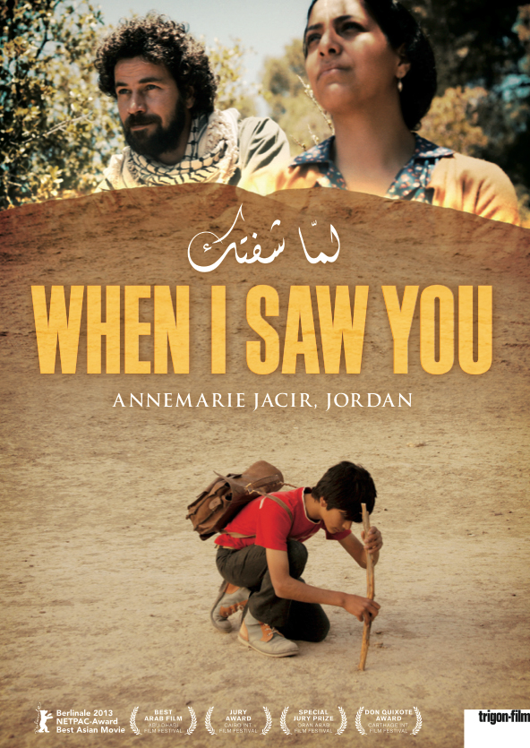
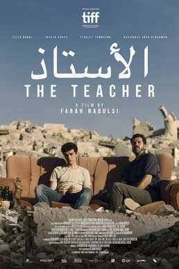
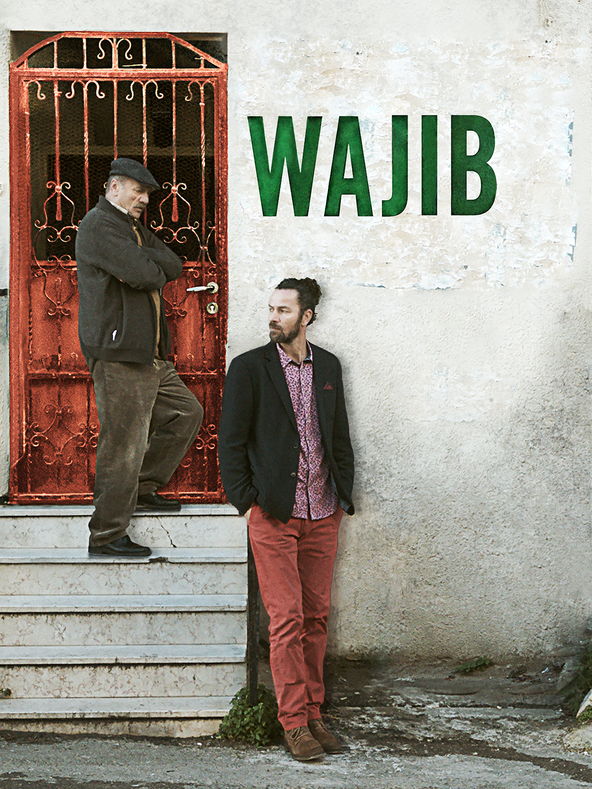
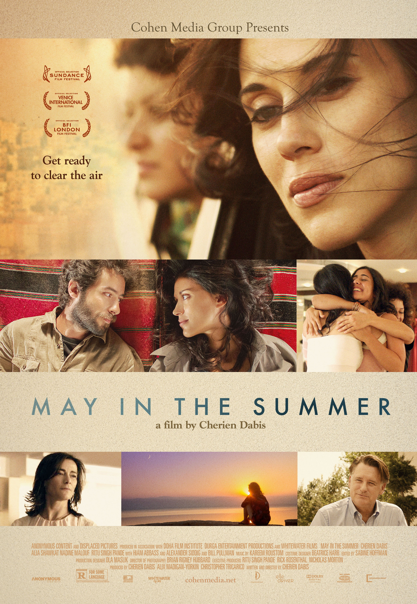
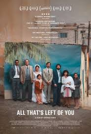

Film Archive
Visual Analysis
Visual and spatial readings of key films, mapped through checkpoints and other sites of cinematic refusal.
Single click to filter · Double click any pill to reset

Annemarie Jacir
Salt of This Sea
Coverage: 2 of 4 checkpoints

Farah Nablusi
The Present
Coverage: 3 of 4 checkpoints

Annemarie Jacir
When I Saw You
Coverage: 1 of 4 checkpoints
Mai Masri
3000 Nights
Coverage: Prison, checkpoints

Farah Nablusi
The Teacher
Coverage: Will add soon

Annemarie Jacir
Wajib
Coverage: Will add soon

Annemarie Jacir
May in the Summer
Coverage: Will add soon

Cherien Dabis
All That's Left of You
Coverage: Will add soon

Najwa Najjar
Pomegranates and Myrrh
Coverage: Will add soon
Film Analysis